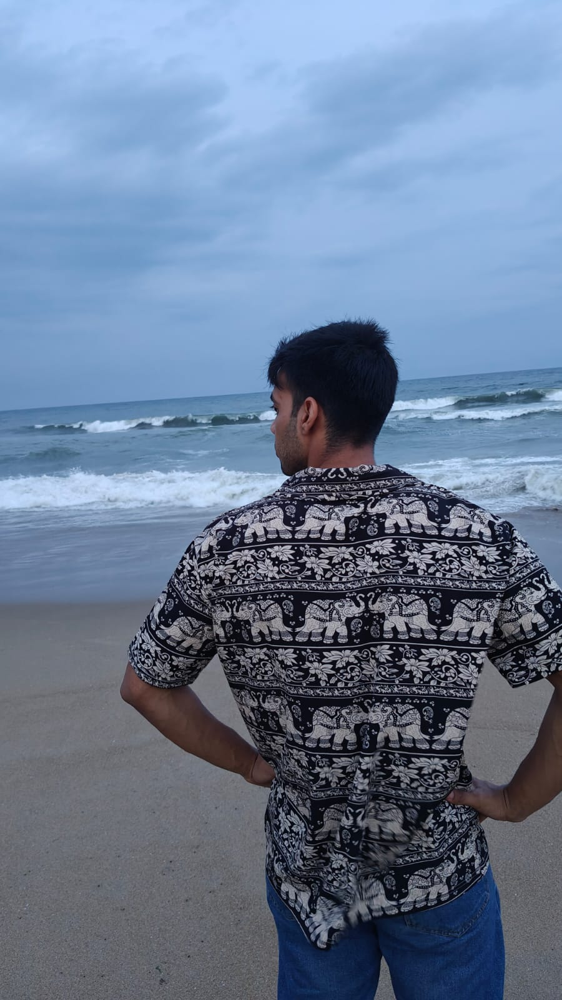
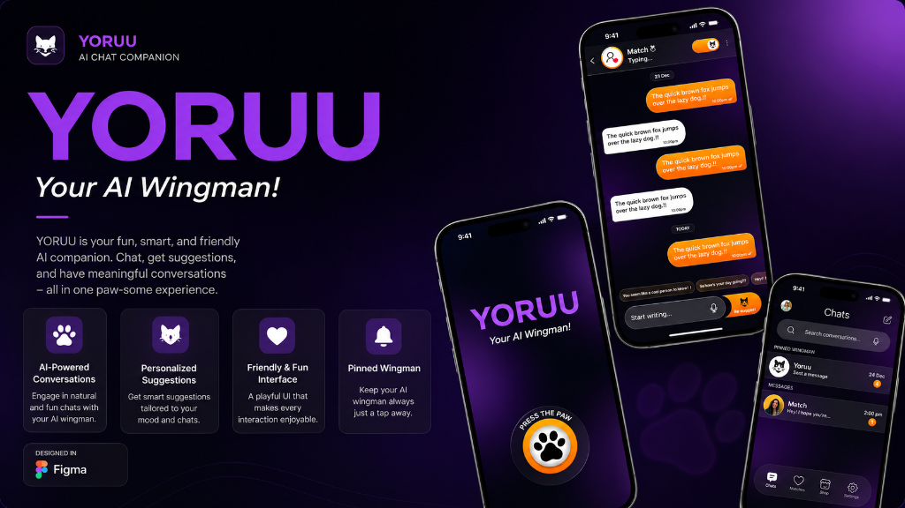

ABHINAV VATS
BUILT 50+ REUSABLE COMPONENTS.
ENGINEERED DESIGN TOKENS, AN
ABSOLUTE GENIUS 3
WORKING WITH ABHINAV WAS ON
MY BUCKET-LIST FOR A LONG TIME..
GLAD IT WAS POSSIBLE 2

"WE DON't FULLY UNDERSTAND HIS
PROCESS. BUT IT WORKS." -
LOOPING LOONS TEAM 2
From Wireframes to Production, UI/UX Workflow Delivers Results
Designed by Abhinav Vats, the UI/UX frontend experience reduced friction and improved conversions, driving 50+ successful production components in its first quarter.
Feature Stories
3 PROJECTS · LIVE PROTOTYPES · 2026
Yoruu: AI Chat Companion & Matchmaking App
An AI-based chat application designed to match users for dates through intelligent conversation, smart recommendations, and interactive AI companions.
Figma Prototype
figma.com/proto/7eHVYRCt2PhAcdjhQdqzAU/Yoruu